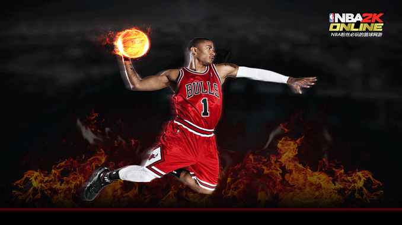

中国外交部长王毅1月24日在达沃斯论坛上做《中国发展的全球维度》主题演讲时表示，日益繁荣的中国意味着将为世界发展提供更多的机遇。
王毅表示，中国的年进口总额已经接近两万亿美元，预计今后五年将进口超过10万亿美元的商品。
日益繁荣的中国对世界意味着中国将为世界发展提供更多的中国机遇。王毅指出，在实体经济面临融资难题背景下，中国企业成为国际投融资新的生力军。去年，中国非金融类对外直接投资已超过900亿美元。新一轮改革将鼓励企业和个人对外投资，推动中国的对外投资迈入一个新的阶段。王毅表示，在世界经济增速低迷的背景下，中国作为一个规模超过9万亿美元的经济体，去年仍然实现了7.7%的快速增长。在G20国家中继续名列前茅，而且这一增长是在加快调整经济结构的进程中实现的，是实实在在真金白银的增长。
据推算，只要中国保持7%的增长率，就能拉动全球经济增长一个百分点。新一轮的改革将使中国保持较长时间的中高速增长，这对世界经济无疑是重大的利好。
美国劳工部1月16日数据显示，12月CPI年率增长1.5%，虽然月率增幅创下近6个月新高，但距离美联储设定的2%的年通胀率仍有不小差距。
芝加哥联储主席查尔斯·埃文斯直言：“最近发布的通胀数据太低，并不乐观，远低于美联储2%的目标。”而明尼阿波利斯联储行长那拉亚纳-柯薛拉柯塔则表示，预计通胀在2016年以前都不会达到2%，因此他强烈建议实施更多的刺激经济的措施，同时警惕通缩的风险。
美国还只是警惕通缩风险。而欧洲则已经要面对“魔鬼”光临了。欧洲央行总裁德拉吉为通缩画出一个分界线，指出通缩是物价持续不断下滑。
欧盟统计局数据显示，12月欧元区通胀率为0.8%。这远低于欧洲央行略低于2%的目标，欧元区第三大经济体意大利的通胀率仅为0.7%，而希腊通胀率则为近负2%。同时，欧盟统计局还确认，欧元区12月核心通胀率只有0.7%，为2001年该数据有记录以来的最低水平。IMF警告称，美欧等高负债经济体共同面临一大挑战，即一旦物价持续下滑将推升本币币值，进而削弱需求抑制消费，同时还会增加债务负担。IMF却指出，日本不大可能重新陷入通缩。果真如此吗？已经公布的数据显示，日本CPI年率在去年11月份上升12%，创五年来最大升幅。日本首相安倍晋三在达沃斯上便迫不及待地表示日本已经摆脱通缩。
读后感: 这本是使我比较全面了解Javascript的书，我读了有3遍了，每次读了都有这样的一种感觉：怎么这部分知识上次没看过的？然后心里就会暗喜，功力又进步了。虽然每次都比较费时间，但是想到能够更透彻地理解每个知识点，就会感到很满足^_^。
读后感: 这本书是和Javascript高级程序设计一起买的，打算配套着读的，如果看其他书某个知识点不明白就可以在此书找到解答，但是读了Javascript高级程序设计，就觉得没有这么必要了~感觉有点浪费，么么哒(┬＿┬)
读后感: 这是我Javascript入门的第一本书，因为一开始学的时候不知道该由那本书学起，然后在网上各种搜索，觉得这边书比较多人推荐就买了。这本书内容比较少，或许这样就让小白们觉得Javascript是很容易的o(∩_∩)o
读后感: 这本书还没有读，那为什么我还买呢？这是因为买这本书之前，就看到各种报道说node.js各种牛X，刚好这时有个微博举行活动，预售此书50本而且有作者签名，然后看到作者的名字是朴灵，感觉特别帅气，然后就花了50大洋买了。当然我肯定会学习这个火热且牛X的技术的！
读后感: 这本书是我在大一暑假在广州传智播客培训期间买的，虽然每天要学习12小时以上，但是总会怕遇到空闲的时候，所以就买了这本书把这些空闲时间填补了。这本书不错，很多细节部分都有写到，看到一些新的知识点都会发出"O"的一声。这也是很多网友推荐此书的原因吧。
读后感: 先在这里要向作者说声：对不起！因为我看的是电子版的，大家都懂的。这本书也不错，首先翻译得比较好，提及到了平时常用到的技巧和方法，实用性比较高，内容比较全面，也有配套的代码和截图，学习起来就更爽了。而且最终的页面是作者的个人主页←_←。
读后感: 这本书我看了4分之一吧。刚买回的时候就看了下配套的代码，瞬间就觉得canvas的强大了。因为这本书是仅仅围绕canvas元素写的，所以看透此书的话，实力肯定杠杠的。但是正如这本书所说的：无需阅读即可领会其内容，就是采取“总-分”的结构，前面的例子已经包含后面的知识点的，而且代码注释很少，所以开始读起来就会觉得比较难。
读后感: 这本书是我在HTML5中国论坛上的活动得到到。
进口豪车在华售价动辄翻番，这不仅源于税高，更在于厂商敢于要价众所周知，同样一辆豪车，在国外售价低，进口到中国售价就要高得离谱，涨一倍是少的，涨两倍是常事。以路虎揽胜5.0升V8 S/C Vogue SE汽油版为例，在美国售价9.91万美元（折合人民币61.442万元)，在中国的市场指导价达243.8万元，还经常要加价才能买到。
对于这种价格“双轨制”，普遍的看法是将其归咎于中国税高。的确，相比美国，一辆车进口到中国要增加25%的关税、0-40%（按排量不等）的消费税、17%的增值税，加起来是不少。但仔细算一算就知道，光是税高，还不足以撑起3倍左右的售价，实际上厂商在其中加入的“暴利”不容忽视。还以上述揽胜车型为例，据经销商的数据，捷豹路虎公司批发一辆揽胜给经销商，仅这个环节就获利75.113万元。正如特斯拉在中国宣布售价的公告中所言：“（其它豪车品牌）定价较高的真实原因是——他们在中国销售的每一辆车，利润是在美国或欧洲的两倍。”
“全球的保时捷汽车都将被中国人买光”，福布斯网站的一篇文章开头就这样写道，并引用麦肯锡的数据指出“中国很可能在2016年前就能超过美国成为全球最大的豪华车市场”。
两个现象可以说明中国人对豪车的热情。一是外观“霸气”的路虎揽胜系列已经取代悍马成为中国“土豪”的新图腾。媒体人李铁2012年底去神木县走了一圈，感叹“有一个现象很能代表这个煤老板之城的性格，在这里，你会以为路虎只生产一个车型，那就是揽胜，什么神行者，发现4，几乎见不着。这个小县城的揽胜，比广州全市都多”。
中国“土豪”的趋之若鹜，造就了揽胜系列的加价提车神话。揽胜极光加价20万、更高端的揽胜加价40万都不是稀奇事。二是不少中国车主喜欢把豪车中的低端车型改成高端车型的外观。什么抠掉“华晨宝马”标志、把奔驰E200改成E300等等。更可笑的是，法国高端汽车品牌DS的一款车型为了外观好看，加装了一个只起装饰作用的排气管构成双排气管造型，但有中国车主还嫌不够气派，要求厂商多拉一条管道把这台只有1.6T排气量的车改成两个排气管都能冒气。
以上两个现象也说明中国车主炫耀性消费的特征。然而据麦肯锡的调查，希望彰显地位并进行炫耀固然是中国车主的一贯特征，但真正喜欢玩车的一代中国车主也正在崛起。在它们的调查中，30%的中国受访者为了“反映社会地位”升级至高档汽车，在所有原因中居于榜首，而27%的中国受访者表示购买豪车是为了“满足自己的喜好”。总之，无论是传统的为了炫耀还是新崛起的喜欢玩车，都构成了“豪车不愁卖”的中国特色。
买豪车不眨眼的“土豪”未必真爱车，真爱车的玩家又未必能豪掷千金。汽车论坛上很多爱车的中产阶层感叹“如果XX车也是国外的售价，咱也来一辆”。也有咬咬牙真买的，但面对国内外巨大的差价车主心理怎能平衡。更恼火的是我们付出的是最高的价格，得到的是最差的服务
以“传承百年品质”著称的奔驰，在一项调查中被59%的中国消费者评为“售后服务态度最差”。实际上中国的豪车厂商服务普遍被诟病，售价高、保养贵、服务差几乎成了豪车的公认特征，甚至上演了现代版“农夫与蛇”的故事——捷豹路虎本来是一个走向衰路、濒临倒闭的品牌，正是中国市场的贡献救活了这个品牌。然而中国车主温润的怀抱换来的却是让他们一肚子气的服务。各种车主维权的艰难且不提，光是一个“路虎车子坏了反怪中国油品”的问题就可谓臭名昭著——中国是你捷豹路虎的第一大市场，你生产的产品反而不考虑这个市场的情况？价格“双轨制”连着的还有服务“双轨制”。中国消费者希望得到平等与尊重
在豪车领域的遭遇，其实是中国消费者在进口优质商品领域普遍的遭遇付出的价钱高、拿到的时间晚、得到的服务差，这是中国人消费进口优质商品的普遍模式。而“双轨制”带给中国消费者的憋屈还不止于此。
中国游客在欧洲为了差价抢购奢侈服饰，场面屡屡被拍下来奚落嘲笑；大陆游客在香港为了抢先体验和差价购买电子产品被讥讽为“蝗虫”，最屈辱的是带走几罐奶粉竟然可能被抓起来。由于香港的外国品牌奶粉价格比大陆低3成（乳业分析师宋亮指出，关税在奶粉价格上占比很少，大陆奶粉价格虚高主要是外资品牌对在华公司的利润率要求很高），导致大陆水客“扫货”，引发了限购令。
对此一位餐饮业的老板感叹，“我去香港，在海关，看到巨大标语——足足有200个iPad拼起来那么大——上面警示：携带两罐奶粉以上过关，即属违法，将面临监禁！在那一刹那，我没有任何别的感受，唯一感受就是‘荒谬’。在我的家乡北京，三环以里，随便一平方米的房子都是四五万元，但凡拥有一套大点儿的住房，都是千万身家，但从香港往这边多买两罐奶粉，你就变贼了。”
中国国内缺乏有竞争力的产品、对优质产品又有庞大的需求，如果是这样的消费基础惯坏了外国厂商，让他们敢于使用“双轨制”，那么虽然我们不高兴，但这也还属于一个市场问题。可真相或许没有这么简单。